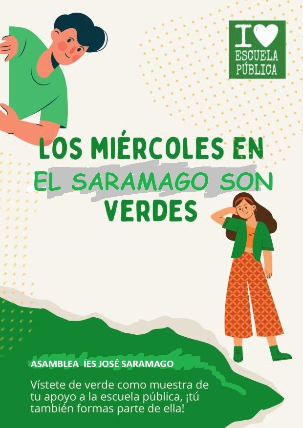
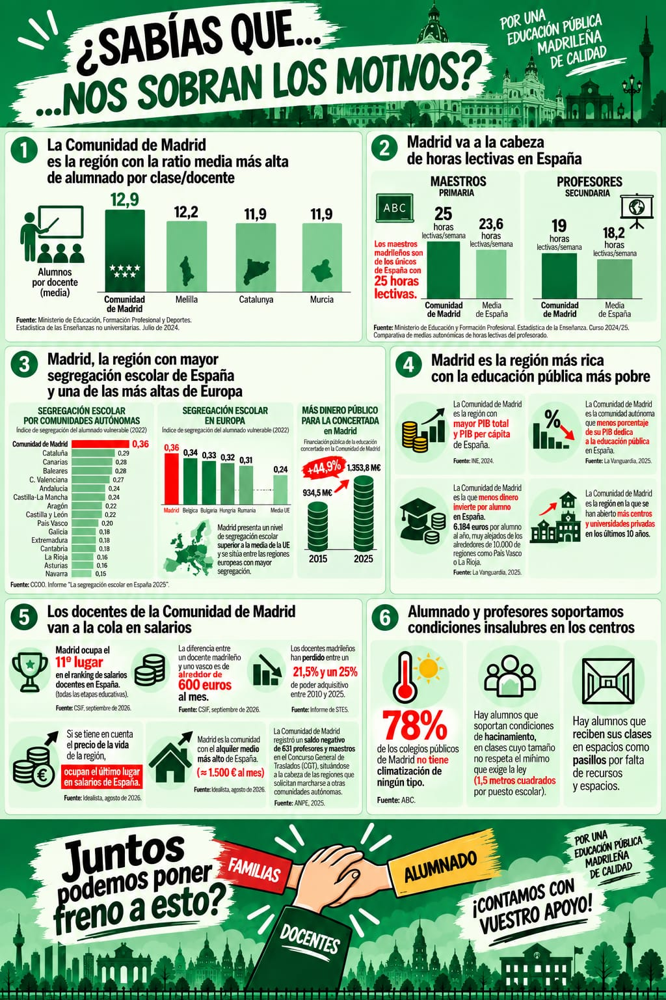
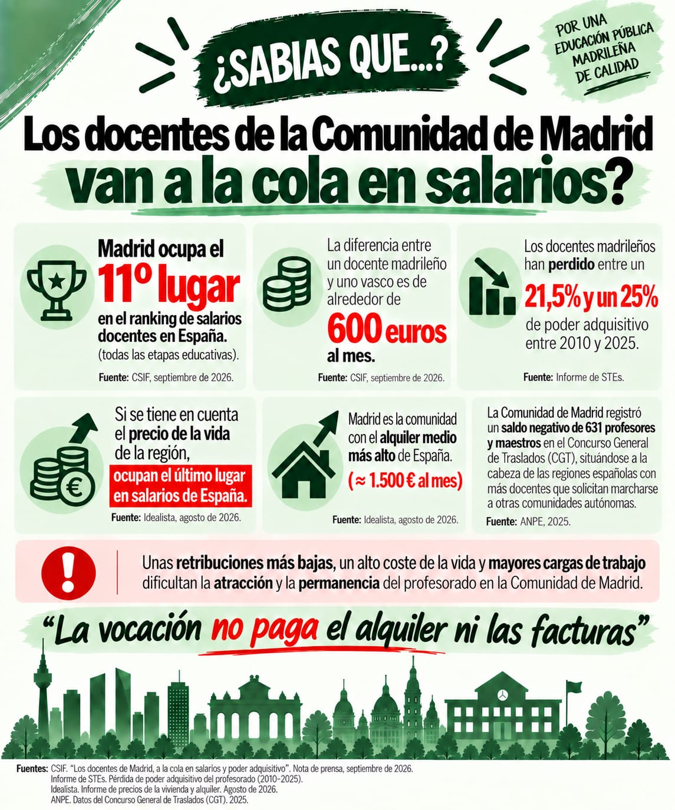

Inicio
Bienvenidos a Saramago en Verde, la plataforma donde impulsamos la educación de calidad y la defensa de nuestra comunidad educativa.

Reivindicaciones
Nuestras prioridades y demandas activas para mejorar las condiciones de enseñanza y aprendizaje en las aulas.


Bajada de ratios
Exigimos un número reducido de alumnos por aula para garantizar una atención personalizada a cada estudiante.
Atención a la diversidad
Recursos suficientes y personal especializado para atender las necesidades educativas específicas de todo nuestro alumnado.
Contacto
¿Quieres colaborar o sumarte a la iniciativa? Escríbenos para participar activamente en nuestras acciones.